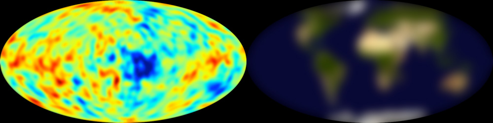
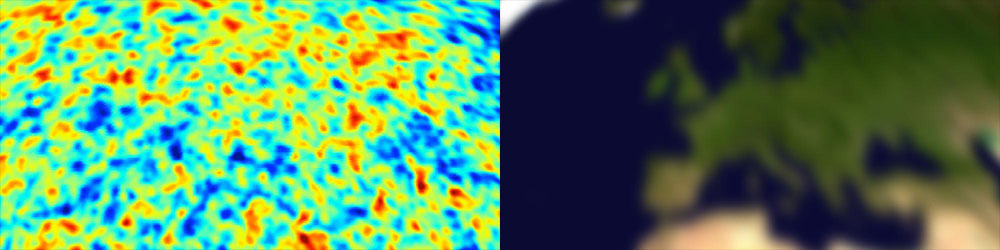
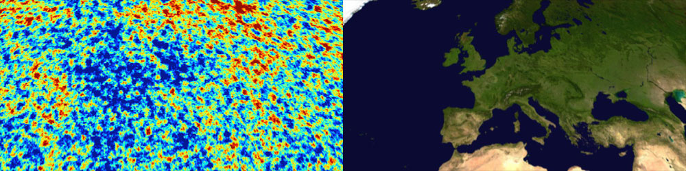

Cosmic ripples come into focus
A new map of the cosmic microwave background, from the European Space Agency's Planck satellite shows, in unprecedented detail, ripples in this radiation – thought to be seeded by quantum fluctuations that were extended to massive scales during inflation, the ultra-rapid expansion of the nascent Universe. Cosmologists will use the map to pin down parameters such as the curvature of space-time, and the contributions that normal matter, dark matter and dark energy make to the distribution of mass and energy in the Universe
How sharp is the Planck map? Find out by exploring the slides below, which show successive CMB maps alongside an image of the Earth on the same projection, blurred to approximate the resolution of its cosmic counterpart.
〈 Previous
Next 〉

COBE, 1992: George Smoot of the University of California at Berkeley said that viewing the CMB map produced by NASA's Cosmic Background Explorer satellite was like "looking at God". Maybe if you're short-sighted – a satellite snapping the Earth at the same resolution could roughly make out the continents, but little more. Given that it was the first time the cosmic ripples had come into view, Smoot's excitement was justified, and he later shared a Nobel prize for the discovery.
Planck, 2013: The new map's detailed view of the microwave sky brings the equivalent image of our home planet into sharp focus. [more t/k here once we know what the news is].

WMAP's limits: The differences between WMAP's and Planck's views of the cosmos become clearer if we zoom in on the region of the sky that corresponds to Europe, in our companion view of the Earth. Mimicking the resolution of WMAP's initial map, the continent's rough outline is familiar enough, but large islands like Sicily become vague blurs, while in the British isles, Cornwall merges into Wales.

Planck's triumph: By contrast, the same region observed by Planck reveals intricate fluctuations in the CMB. On the corresponding image of Europe, we can now see details including the Alps. The narrow island of Crete, previously invisible, comes into view, while to the east, it's even possible to make out the Volga river flowing into the Caspian Sea.